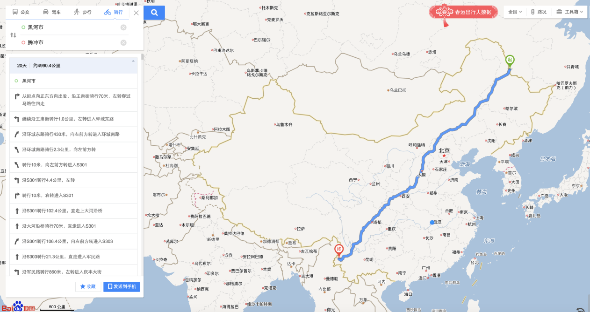
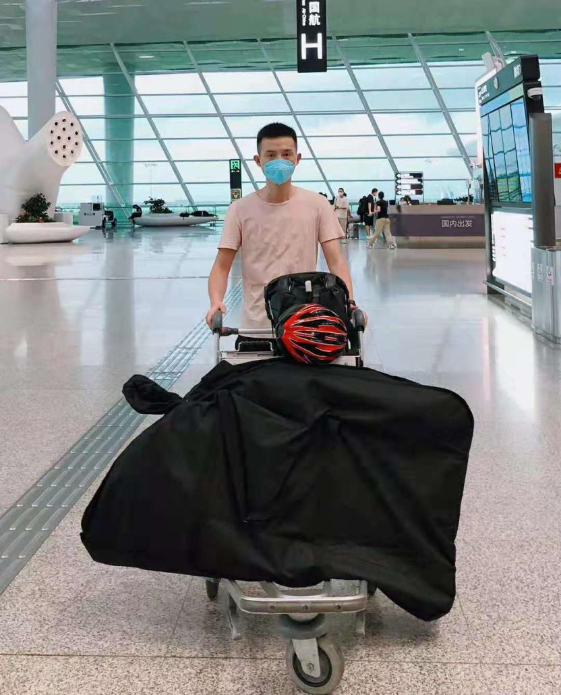
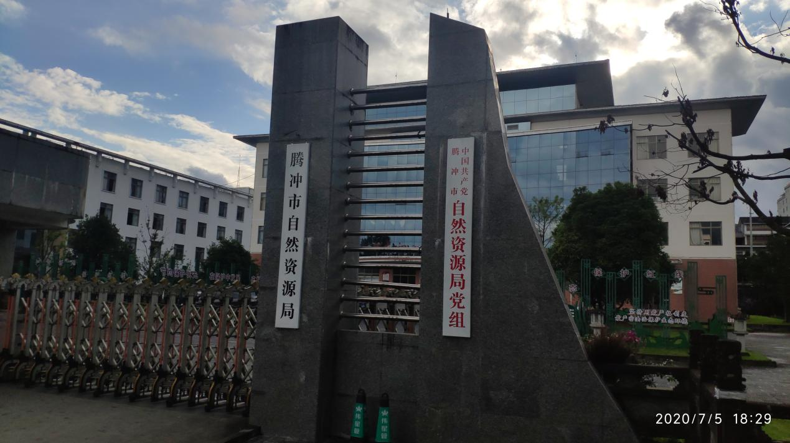
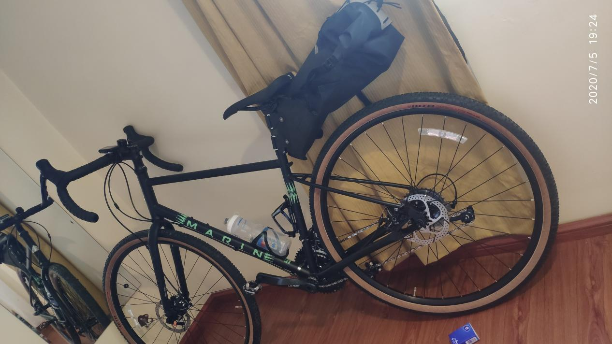

这趟单车骑行计划，是一个在蕴藏在心里又好几年的想法。我是一个骑行的爱好者，但并不是一个狂热爱好者，喜欢偶尔独自一人骑行穿行在城市中，不想什么，偶尔抬头看看风景，感受骑行的速度感。骑行胡焕庸人口密度分布线，是一个偶然萌发的想法，或许是看到很多人骑行川藏线，激发我也想一个特别但也很有意义的线路。一条直线连接中国西南到东北的两个城市，腾冲和黑河，当然无法走真正的直线，这条线只是真实骑行线路的一个指引方向，左右穿插。2019年末，一次没有预兆的大流行瘟疫爆发，而在这关键节点我也结婚了，同时博士学业一直在内耗对抗，无法画上句号，很多事情堆在身上，出现了中度抑郁的倾向，就开始和爱人商量着希望去践行我的骑行想法，她表示非常支持。就在在瘟疫有所好转的时候，毅然决然将计划付诸实施，单人单车，从南到北，行路万里。
作为一个地理信息行业的从业者，每天都是与地理数据打交道，喜欢看地图，看数据，分析数据。通过地形图，可以看出山川形态走势。而这些始终是那么的抽象，内心总是渴望着到实地一探究竟。具体也记不清是什么时候，大概是三四年之前，突然萌发了一个想法，骑行走一趟胡焕庸线，也就是人口分布线，从黑河到腾冲。当时也就突然奇想，但是就埋下了种子，是不是那个想法会从脑子里冒出来。终于在2020年这特殊的一年，这件事情决定去做了。

图1.1 百度地图黑河到腾冲骑行线路
2020年是不平凡的一年，对我个人来说，也是非常重要的一年。在年初，赶在瘟疫爆发前夕，我举办了婚礼，然后和爱人一起来到了深圳，然后就是瘟疫大爆发，无法返回老家过年。在瘟疫期间，基本上时禁足状态，时刻通过各种渠道了解武汉的疫情状况，也尽我所能帮助联系医疗资源。这个过程中，看到不少令人伤心，心痛的社会事件，一时之间对自己生活的这个世界产生了极大的怀疑，对自己也产生极大的怀疑，出现了严重的心理问题。不知道该何去何从。
也就是在这样的一种情况下，那个想法又开始在我脑子里蔓延，我向我爱人诉说我的想法，没想到她非常支持我出门走上一走。因为我自己是一个很静的人，平时不喜欢到处跑动，她非常赞成我能有这样的一个机会和勇气独自走出去，唯一的前提是时刻保持警惕和细心，一切以安全为第一要素。我答应她，接着就是作出行的准备。
为了这次行程顺利进行，我主要从线路、装备以及身体锻炼三个方面做充分的准备。 首先是线路图。从黑河到腾冲，从中国的东北到西南，是一个很长的距离，地形地貌宽度也非常的大。首先确定的是从北到南还是从南到北，最开始想法是从东北往南走，后面因为北方疫情有所反复，选择从南方往北方走。然后就是线路准备，首先通过直线连接黑河和腾讯两个城市，在这条直线两旁寻找待落脚的县级及以上的城市，经历保持两个城市点之间的距离在100-200公里左右，也就是保证每天能够从一个城市到达另一个城市，骑行的线路选择国道和省道。这样就做了一个初步的线路筛选，并通过骑行软件做了路书。大概需要骑行43段线路，预计历时2个月。最后骑行过程中发现，基本线路差不多，但是基本上还是没到一段会重新规划下一段时间的线路，会有较多的调整。
其次是装备的选择。第一要素当然是自行车，由于是一段长途旅行，就没有选择平时使用的山地车，选择了一辆钢架结构的旅行车，主要觉得钢架结构牢靠，另外钢架车弹性好，长途骑行的舒适度比较高。然后就是骑行的配件，头盔，锁鞋，锁踏和常规脚踏。计划着轻装出行，就没有配备货架，用了背包和一个大的后尾包。最后证明这是错误的选择，沿路出故障换装备。然后准备了基本的修车装备，主要是打气筒，补胎套件，备用内胎。最后就是各种衣物和救生装备，压缩饼干和救生毯。通讯设备额外准备了一个续航长的诺基亚手机，还准备了一台二手的ThinkPad X230笔记本，以及一个20000毫安时的移动电源。最后就是一些防晒防护用品，防晒霜，皮肤衣，冰袖等。
最后，其实也是最为重要的就是身体条件，比较这种骑行并不是一般体能能坚持下来的，所以开始做一些跑步锻炼，手臂力量的练习，保证体能能够跟得上，同时恶劣情况下手臂有力量扶住车把。自己在也有过跑马拉松的经历，体能上对自己还是有一定的信心。
一大早5：30出发去机场，头天晚上预约的司机居然没有来，怕是睡着了。重新叫车，幸好有接单的。出发前，对行李做了分类，自行车拆前后轮，隔离，绑定，与自行车配件等一起；衣物一包；电子产品一个袋子。因此，在托运自行车，过安检相对快速顺利。和老婆在机场一起吃了个早餐，然后去登机口。航班分两段，先到昆明长水机场，然后转机到腾冲驼峰机场，中间因为行李没有直挂，需要在昆明再次办理托运，也都很顺利。出机场的时候，都需要出示云南健康码，绿码放行。在腾冲出来时，检查了身份证，由于武汉身份证，疫情防控的原因，问了行程，也问了核酸检测报告，幸好昨天做过一次检查，出示了电子检测报告，和身份证一起拍照放行。

图1.2 机场出发
航班提前到达了驼峰机场，下飞机立马打电话给酒店接送的司机，不算远，没等多久就上车去酒店。疫情期间，对于我这个武汉身份证也没有过分为难，看了一下健康码，就入住了。进房间第一件事就是解开打包的自行车，开始安装。车包特意贴了易碎标志，还是破了几个小窟窿。自行车装车还是很方便快捷，打气有点问题，气筒不给力，两个轮子折腾了十几分钟。要换！装好车，收拾了一下行李，就出门把车包寄回去。然后在腾冲市里面到处转悠。
腾冲市整体不算大，很快可以走完一个核心区域，也可能是我没走到。整体觉得还是满冷清，店铺还是很多关门，吃饭的店子很多都没有人吃饭，搞得我都不太敢进去找吃的，最后回酒店点了外卖。第一餐就是外卖。腾冲城市街道非常整洁美观，环境优美，接车司机路上告诉我腾冲市文明城市啥的。城市酒店非常的多，后天就要高考了，一些大的酒店，名字好的住了好些高考的考试，傍晚成群的出来，也可能市刚吃完饭，到小商店买些零食饮料，看起来大家都很开心放松，或许是快要解放的感觉。一时有点恍惚，后来才反应过来这又是一项因疫情影响的规律性的事情，被推迟一个月，仿佛回到了若干年前的高考时间。

图1.3 腾冲市自然与资源局
回酒店吃了饭，准确是吃了两口，和家里通话视频，告知爸妈我的计划。不用想，不同意！让我回去。然后就是老婆和我弟轮番的劝说，我也和老爸仔细讲了我的情况，才勉强同意，也就是你自己决定的事情自己管，现在爸妈是管不了了。实话，都三十的人了，都成家了，我和老婆商量好，大概就行了。不过通话过程中感觉到父亲反应开始有点迟钝，对我坚定的信念还是有一点动摇。而我弟告诉我，骑行就好好骑行，别想其他，完了回来再把事情安顿好就行。是，我既然决定了这一程，那就心首先要定，走完自己选择的这一程路。
和家里谈判完毕，饭菜已经凉了。也不想吃了，打包行李，洗澡休息，准备一早出发。

图1.3 装备装配完毕定妆照